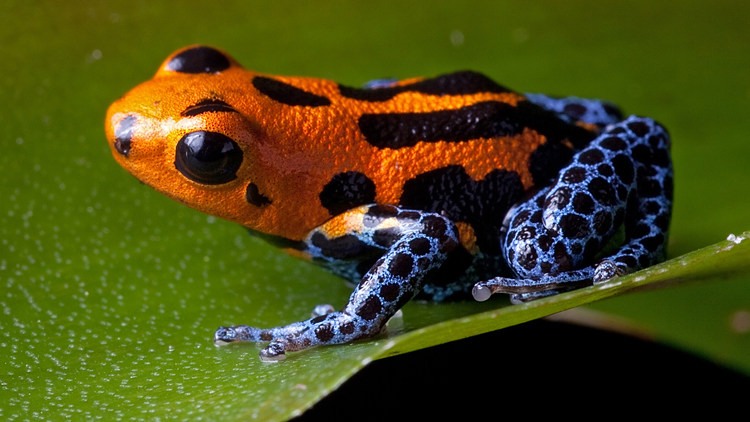

A mix of red and yellow, orange combines the passion of the former with the positivity of the latter. Bright and vibrant oranges are fun colors that burst with youthfulness, energy, and happiness. They inspire creativity and uplift people's moods. Golden oranges also exude a sense of luxury and prestige.
Aposematism is the use of warning coloration to inform potential predators that an animal is poisonous, venomous, or otherwise dangerous. Oftentimes orange or red patterns may be warnings.